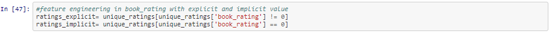
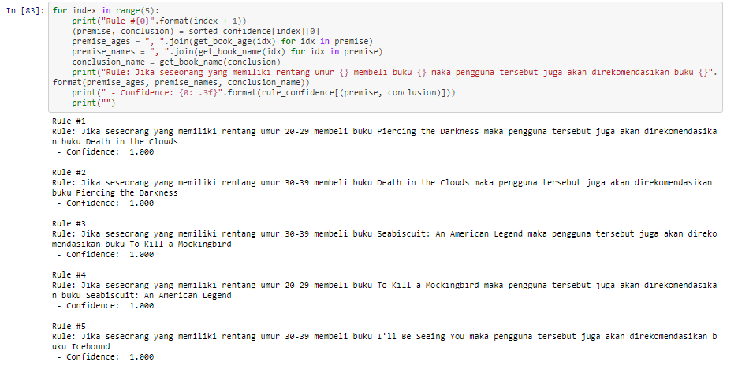

Proyek DAMI 2021
Modelling
Dilakukan pemilihan dan penerapan berbagai teknik pemodelan dan beberapa parameternya akan disesuaikan untuk mendapatkan nilai yang optimal.
Biasanya, ada beberapa teknik berbeda yang dapat diterapkan untuk masalah data mining yang sama. Oleh karena itu, pada tahap ini masih kemungkinan kembali ke tahap sebelumnya .
Tahap ini akan dilakukan rekayasa pemilihan fitur/atribut pada dataset yang disesuaikan dengan kebutuhan pembangunan Market Basket Analysis.
Kegiatan ini dilakukan dengan memanfaatkan sumber informasi data yang diperoleh pada tahap eksplorasi data sehingga dilakukan modifikasi fitur agar model dapat bekerja dengan baik dalam memberikan rekomendasi dan aturan asosiasi menggunakan algoritma asosiasi.
Tahapan ini dimulai dari:
1. Melakukan identifikasi pada rating yang diberikan user terhadap buku. Diketahui berdasarkan eksplorasi data bahwa rating yang diberikan user terhadap buku berada pada rentang rating > 0 namun juga terdapat user yang belum atau tidak memberikan rating terhadap buku sehingga informasi rating =0. Rating ini diidentifikasi menjadi rating implicit (feedback implicit) sedangkan rating dengan rentang rating > 0 diidentifikasi sebagai rating eksplisit (feedback explicit).
Feedback explicit merupakan feedback yang diberikan oleh user dalam bentuk rating yang biasanya memiliki cakupan rating > 0. Pada sistem feedback ini, sistem akan meminta user untuk memberikan opini (penilaian) terhadap sistem atau layanan yang telah diterimanya sehingga dibutuhkan effort lebih dari user.
Feedback implicit, pada feedback ini dijelaskan bahwa user tidak perlu memberikan opini terhadap layanan sistem. Sistem yang secara otomatis akan memonitor setiap aktivitas pengguna dan menyimpannya dalam bentuk history data contohnya berapa kali user menekan informasi dari satu buku dll.

2. Selanjutnya dilakukan pendefinisian buku yang mungkin diminati oleh user dengan memiliki buku yang diberikan rating > 5 dari rentang 1 -10 rating yang diberikan user dengan asumsi bahwa buku dengan rating > 5 yaitu rating 6 - 10 memiliki kemungkinan akan lebih disukai oleh user. Dilanjutkan dengan menghapus beberapa feature yang tidak digunakan untuk pembangunan sistem.
Berikut ini merupakan isi data frame 2 data buku yang telah diterapkan aturan bahwa buku dengan rating > 5 didefinisikan sebagai favorable buku sehingga apabila dicetak isi data frame dataset maka teridentifikasi seperti gambar berikut.
3. Lalu diambil sample dataset 200 pengguna pertama yang akan digunakan untuk melakukan training set. Tahapan ini dilakukan untuk mereduksi ukuran dataset sehingga akan membuat algoritma apriori bekerja dengan lebih cepat. Lalu dibuat dataset berdasarkan review berupa rating favorable yang telah didefinisikan sebelumnya.
4. Pada tahap ini dibutuhkan data buku dengan review yang bagus untuk membentuk dataset baru sehingga dataset dikelompokkan berdasarkan UserID pada ISBN (kode unik) buku kemudian dilakukan iterasi berdasarkan buku di setiap kelompok. Lalu dibuat sebuah dataframe berisi informasi data yang telah dikelompokkan berdasarkan review yang bagus.
Berikut ini tampilan isi data frame yang telah dikelompokkan yang diurutkan berdasarkan jumlah rating terbanyak yang diberikan terhadap buku (Favorable).
The Apriori Implementation/ Market Basket Analysis
Tahap ini merupakan bagian dari implementasi market basket analysis yang menggunakan algoritma apriori.
Pertama dilakukan initial frequent itemset untuk mendefinisikan frequent itemset. item yang dalam hal ini merupakan buku yang memiliki pola sering dibeli oleh user akan disimpan dalam kamus itemset dengan tujuan agar dapat digunakan untuk mengakses itemset dengan panjang tertentu. Lalu didefinisikan minimum support untuk memberikan pertimbangan bahwa itemset tersebut sudah frequent. Hal ini disesuaikan dengan pola transaksi yang ada pada dataset sehingga didefinisikan min_support bookcrossing=2.
Penggunaan metode frozenset yang merupakan kelas bawaan untuk membantu melakukan tahapan operasi set. Metode ini bersifat immutable yang artinya dapat mengubah suatu iterable ke dalam himpunan yang tidak dapat diubah. Metode ini akan digunakan sebagai key dalam counting dictionary. Itemset yang dibentuk dari fungsi yang didefinisikan dari potongan kode ini akan diuji apakah itemset tersebut telah frequent. Dimana syarat item yang telah frequent.
Didefinisikan fungsi find_frequent_itemsets yang baru ditemukan kemudian untuk membentuk superset lalu menguji itemset. Kemudian dilakukan perulangan (for) sebagai praktik rule of thumb untuk melakukan iterasi pada dataset, identifikasi setiap itemset pada dataset untuk memvalidasi dengan algoritma if bahwa itemset tersebut bagian dari review. Jika benar maka telah tervalidasi bahwa user telah melakukan transaksi atau tinjauan pada setiap buku di itemset.
Fungsi diakhiri dengan melakukan pengujian candidate itemset yang memenuhi syarat dari min_support. Itemset ini akan dipertimbangkan sebagai frequent itemset.
Langkah berikut merupakan fungsi loop untuk menyimpan itemset yang telah ditemukan. K didefinisikan sebagai panjang frequent itemset yang akan ditemukan. frequent itemset yang telah dibentuk akan disimpan dalam dictionary sesuai dengan panjangnya.
Ditambahkan fungsi else jika pada iterasi pencarian itemset sudah tidak ditemukan lagi frequent itemset yang baru maka akan dikembalikan kalimat yang memberikan informasi tersebut. Hasil dari pencetakan frequent itemset berdasarkan iterasi dari fungsi yang telah diinisialisasi.
Extracting Association Rules
Berdasarkan penerapan algoritma apriori telah diperoleh daftar frequent itemset dimana frequent itemset ini merupakan serangkaian itemset yang telah memenuhi syarat minimum support. Kemudian akan dibentuk rules asosiasi yang memiliki premis (left-hand side) dan kesimpulan (right-hand-side) berdasarkan analisis data (Market basket analysis) yang telah dilakukan pada tahap sebelumnya. Teknik Market basket analysis ini menemukan adanya relasi yang menarik antar item sehingga terlihat adanya pola.
Pada potongan kode berikut dilakukan fungsi perulangan frequent itemset yang telah ditemukan berdasarkan setiap pola panjangnya sehingga dapat diperoleh daftar semua aturan dari masing-masing frequent itemset. Hasil daftar semua aturan tersebut akan disimpan dalam bentuk premise dan conclusion pada candidate_rules. Berikut ini merupakan hasil beberapa aturan pertama dalam candidate_rules.
Bagian pertama dari potongan kode berikut merupakan daftar buku dalam premis di kamus (frozenset) smentara kalimat yang didefinisikan setelahnya merupakan kesimpulan (konsep jika dan maka) untuk sistem rekomendasi. Pada fungsi ini dilakukan iterasi pada semua user dan review berdasarkan buku yang mungkin disukai dalam setiap candidate association rule. Lalu dilakukan pengujian dengan fungsi “if” untuk memastikan bahwa premis yang diberikan memang berlaku untuk seorang user, maksudnya buku yang direkomendasikan apakan memang sesuai dengan minat user. Jika ya maka akan dilihat bahwa buku yang direkomendasikan akan mendapat kesimpulan baik namun jika tidak maka rekomendasi yang diberikan tidak benar. Dilanjutkan dengan melakukan penghitungan confidence pada setiap aturan. adapun min_confidence yang didefinisikan yaitu 0.9.
Setelah melakukan proses ekstraksi rule asosiasi berdasarkan frequent itemset dengan min_support = 2 dan diperoleh beberapa rule dengan min_confidence = 0.9 maka selanjutnya dicetak 5 daftar rule teratas dengan menggunakan kamus sebelumnya (confidence dictionary).
Hasil rule asosiasi menunjukkan setiap buku berdasarkan ISBN memiliki pola unik dan direkomendasikan terhadap user lainnya.
Pada tahap recommender system merupakan rekomendasi dari beberapa variabel yang terdapat pada data sehingga dapat dilakukan pemilihan lebih tepat seperti dalam pemilihan rekomendasi buku mana yang lebih relevan diberikan kepada pembeli berdasarkan usia pembeli. Penjelasan proses recommender system dapat dilihat pada gambar berikut.
Berdasarkan rule yang telah dibentuk maka dibangunlah sistem rekomendasi dari market basket analysis based one age. Pada potongan kode berikut didefinisikan terlebih dahulu fungsi untuk mendapatkan indeks kode unik dari buku yang dikelompokkan berdasarkan kelompok umur. Kemudian didefinisikan buku fungsi buku untuk mendapatkan informasi judul buku dari kode unik ISBN buku.
Lalu dicetak rule berdasarkan fungsi tersebut sehingga apabila user dengan kelompok umur tertentu memiliki pola yang sama maka akan direkomendasikan buku yang sesuai dengan kelompok umur mereka.
Hasil rule dan rekomendasi yang dibentuk dapat dilihat pada gambar berikut.

Berdasarkan rule diatas maka sebagai penjual informasi ini dapat dimanfaatkan untuk membuat keputusan dengan apakah dengan menyesuaikan posisi rak buku berdasarkan buku yang memiliki keterkaitan sehingga apabila pembeli ingin membeli buku tersebut maka akan mudah untuk dilihat, memperbanyak stok buku tersebut atau hal lain yang disesuaikan dengan kebutuhan pasar.